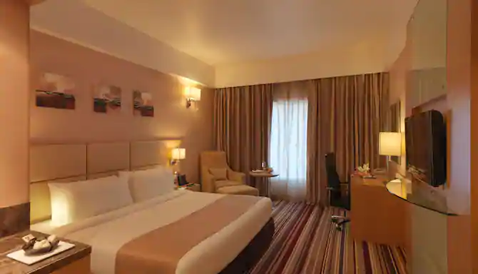
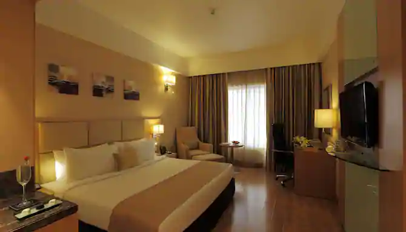
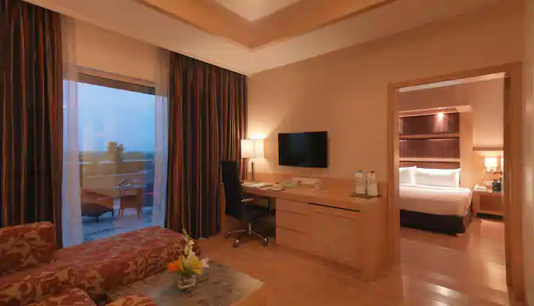
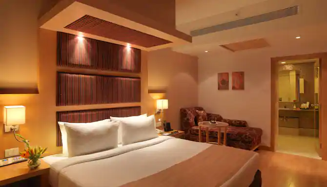

|

|
Superior Room
|
|
Choose between one king or two twin beds in these comfortable standard rooms.
Enjoy our turndown service, and after a great night’s sleep, head down to our free, hot breakfast.
Need to work? Use the well-appointed work desk and free Wi-Fi to get things done.
In the evenings, you can unwind with a show on the 32-inch LCD satellite TV with HD channels.
Perks include early check-in or late check-out (by two hours), a non-alcoholic welcome drink upon arrival,
a 20% discount on food and beverages, and a 40% discount on spa services.
Smoking and non-smoking rooms are available, as well as accessible rooms.
|
|

|
Deluxe Room
|
|
Our fourth-floor Deluxe Rooms offer one king or two twin beds,
beautiful wooden floors, and large windows to take in views of the Chamundi Hills.
Enjoy a cup of coffee or tea while you keep up with the headlines with free Wi-Fi and a free weekday newspaper,
or relax with a show on the 32-inch LCD satellite TV with HD channels. You can enjoy happy hour in the lounge bar
and also have access to the club lounge. All other standard amenities are included, and smoking and non-smoking
options are available.
|
|
|
Deluxe Room with Balcony
|
|
Enjoy your welcome drink upon arrival, and relax in our deluxe room with a balcony, wooden floors, natural light,
and a king bed or two twin beds. Guests receive upgrades such as access to the club lounge, the complimentary
laundering of two pieces of clothing per person, per day, and early check-in or late check-out (by two hours).
Other perks include a 20% discount on food and beverages and a 40% discount on spa services. All standard amenities
are included.
|
|

|
Junior Suite
|
|
Our Junior Suite offers extra space with a king bed in the bedroom, a separate living room, and a dining
area with a table. A complimentary basket of fruit and cookies keeps hunger at bay, and you can enjoy happy
hour in the lounge bar or have a drink in the club lounge. Large windows offer views of local temples, and the
bathtub is a great place to unwind after a day of sightseeing. You can also work out the stress of the day with
complimentary access to our fitness studio and swimming pool. In addition to a walk-in wardrobe in the main bathroom,
this suite also offers a smaller powder room. All standard amenities are included, and smoking and non-smoking
options are available.
|
|

|
Suite
|
|
Conveniently located on the first floor of the hotel, our suites feature a king bed in the bedroom,
a private balcony, and a separate living room that allows your group to spread out. Enjoy the complimentary
basket of cookies and fruit while you use the well-appointed work desk to address postcards or work on your laptop.
You can relax during happy hour with access to the exclusive club lounge and lounge bar, or use your complimentary access
to the fitness studio and the swimming pool to unwind. Other features include a bathtub, a powder room, and a walk-in wardrobe in the bathroom. All standard amenities are also included.
|